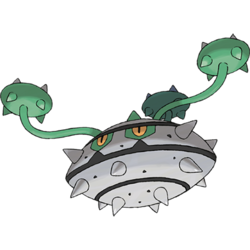
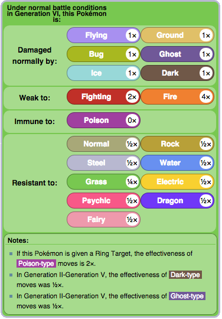
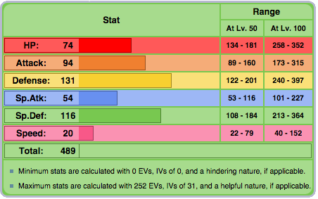
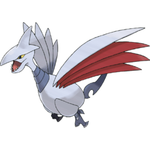
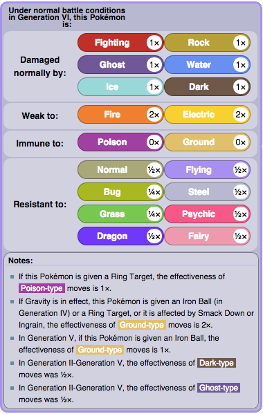
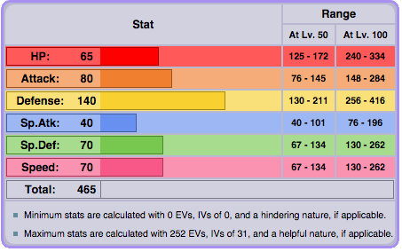
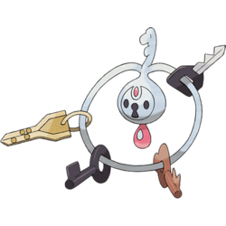
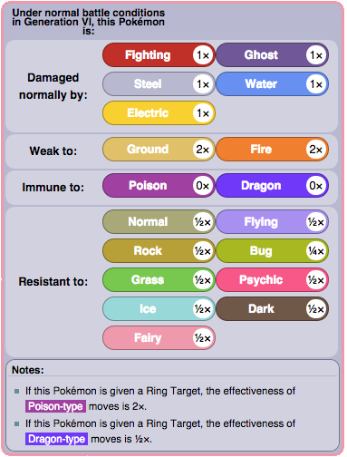
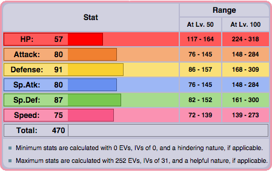

Hazard Setters
Ferrothorn
The majority of the best hazard setters can also function as defensive tanks, like Ferrothorn. With its giant bulk in both Defense and Sp. Defense, along with its many resistances and few weaknesses, it makes a powerful start on many teams to set up mainly Stealth Rocks. It should hold a Rocky Helmet to increase recoil of contact moves along with its Iron Barbs ability. It should be Impish or Careful, or Relaxed or Sassy to decrease Speed, and EVs should only exclude Sp. Attack and Speed.
 | Move 1: Gyro Ball | Move 2: Power Whip |
| Move 3: Stealth Rock | Move 4: Knock Off/Payback/Leech Seed/Spikes |
Skarmory
Skarmory is also a popular choice, and it can function as a physical tank too. It is a reliable hazard setter because with its ability Sturdy, it is guaranteed to have Rocks set up. Much like Ferrothorn, it resists many types and only has two weaknesses. Skarmory should be Impish to boost its Defense more, and the raised in EVs to boost it even further. Some should be invested into Attack, so another angle is possible once the rocks are set. The item can vary, from a Sharp Beak to boost Skarmory's moves, or a Rocky Helmet to inflict more damage.
 | Move 1: Brave Bird/Drill Peck | Move 2: Stealth Rock |
| Move 3: Roost | Move 4: Iron Head/Whirlwind/Spikes |
Klefki
Klefki is another hazard setting Steel type with two weaknesses, but it has the most resistances out of the three. Klefki is best for setting up screens because of its ability, Prankster, allowing its status moves to have +1 priority. With the priority, the screens can be set up to cover Klefki's relatively lower defenses. Its nature can decrease either Attack or Sp. Attack to raise defenses, and EVs should be invested into defensive stats. The item should be Light Clay to increase the duration of the screens.
 | Move 1: Foul Play | Move 2: Thunder Wave/Swagger |
| Move 3: Reflect | Move 4: Light Screen |